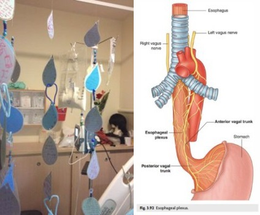

Publicizing the Miraculous Cure
Mrs. Esther (Etti) Ochayon went to the hospital when she felt herself choking. After a failed operation, her condition deteriorated and the doctors were pessimistic. But she, with her strong will, did not lose hope and an incredible miracle took place. With thanks and joy she shares with us the moments of panic, prayer and faith .
By Devorah Leah Halperin

POWER OF PRAYER
The week before Rosh HaShana 5777, I left my house in Tzfas for the center of the country to be with my daughter who was about to give birth. I left the house ready for Rosh HaShana and on my way I made arrangements for my son’s wedding which was to take place about a month after that.
When we were in the labor room, I noticed my daughter turning pale and that the readings on the monitor weren’t looking good. I called for a midwife but she dismissed what I said with a wave of her hand and wanted to change the monitor. When they saw that her condition was indeed serious, the doctors were called in. I began to cry and felt my world caving in. One of the doctors who saw what was going on said to me, “It’s time to pray, not to cry.”
Hearing this, I went to a corner and said, “Hashem, please watch over my daughter. I want my daughter to be healthy with hands full [with a baby]. If something, G-d forbid, must happen, I prefer it happens to me.” Boruch Hashem, after medical efforts were made, her condition stabilized and she gave birth to a baby girl, Menucha Rochel.
I spent Shabbos with my daughter in Ohr Yehuda and made the seuda for the family. During the meal, as everyone was eating, a fish bone got stuck in my throat. At first, I tried different ways of getting it out, but was unsuccessful.
I felt that I couldn’t breathe and began walking with my son-in-law toward Tel Hashomer hospital, leaving a new mother with little children at home. As we walked, I felt I was choking and that every second was crucial, so my son-in-law stopped a passing car and asked him to take us to the hospital.
FAILED OPERATION
Arriving at the emergency room, they began examining me as I screamed and moaned in pain. At first, they tried removing the bone by using a camera down my nose, but that didn’t work. They decided to operate the next morning, sure that I would be released a few hours later.
While operating, they were unable to remove the bone, and on Motzaei Shabbos I was brought back to the operating room. In the second operation, a serious medical mishap occurred in which, not only didn’t they remove the bone, but they ripped a hole in my esophagus, four centimeters in size. As a result, the stomach acids poured into my body, my left lung collapsed, and my entire body was paralyzed. I was in critical condition.
I was screaming in pain, and my feeling was that something serious was happening to me. I tried asking for help, but the staff was certain that it was ordinary pain and tried to calm me in various ways. Sunday morning, Erev Rosh HaShana, I stopped breathing and they sent me for a CT scan where they discovered the big mistake they had made. I was brought in for life-saving treatment.
Every morning, we say in “asher yotzar” that “if one of them closes or one of them opens, it is impossible to exist even one hour.” Hashem watched over me for 24 hours until they caught the mistake, and continued watching over me with another open hole in my body for two and a half months. I saw how everything is in Hashem’s hands.
SHE’S ALIVE!
Rosh HaShana night, when the Jewish people are sitting down to their holiday meal, I was brought to the ICU. The doctors, who thought these were my final hours, asked the family to come, but of course, no one answered their phones and only my sister (who is not religious) got the message. She picked up another sister and they rushed to the hospital hoping to still be able to see me.
I was undergoing treatment to drain all the intestinal acids from the body, in the course of which they did major surgery on my back in which they opened it up forty centimeters, broke the ribs, removed the esophagus, sewed it up and put it back. They put my ribs back in place in order for the breaks to heal. Boruch Hashem, the operation which was done by Dr. Simensky was successful. Unfortunately, due to the haste in which they worked, they left one hole open.
When I woke up from the operation, I heard my sisters shouting, “She’s alive!” I looked around and saw that every limb of my body was connected to another machine. When the doctor came in, I said, “I am happy to see that you were able to remove the bone from my throat without an operation,” because I didn’t notice any scars or bandages. Then the doctor said, “Take a deep breath and you’ll realize you had a serious operation.”
In tests done later, they saw they had to do another operation because of the hole. I said to the doctor, “When I didn’t know what you did, you did what you wanted. Now, when I am going through all the pain and suffering, I cannot allow it to happen another time. I am not doing the surgery. My only question is, when do I go home.”
SIMCHAS TORAH IN BED
It was Sukkos and I told them I must go home, to my family, and to see my daughter who came from abroad for the wedding.
The doctor told me to look around and see how many machines I was connected to. He explained that if and when I was disconnected from the machines, my life would be in danger. He suggested having the family come to the hospital to celebrate Sukkos in the sukka on location and I would be disconnected from the machines for only a short time. I had no choice but to accept this.
I want to thank the Chabad House of Tel Hashomer: Rabbi Gopin, Rabbi Bergman, and their staff, were all there for me when I needed them. On Simchas Torah a group of men came and danced around the bed with a Torah. I felt that the Rebbe was with me.
SLOWLY BUT SURELY
Throughout this time, we opened to brachos and encouragement from the Rebbe for my health. My son Yonatan, the chassan, wrote a letter to the Rebbe with his mashpia about wanting to postpone the wedding. The Rebbe’s answer was “not to change the date at all. As far as your mother’s health, there will be robust health but slowly.” The wedding was on time and I recovered, albeit slowly.
THE RECOVERY ROOM CHABAD HOUSE
My relatives and dear friends did not leave me for a moment and had shifts around the clock. Since I could not go down to the sukka, my granddaughter made sukka decorations for my room. All the brachos and encouragement I got, and the warm hug from the family and community, was hung up. In general, my room served as a Chabad House for everything related to Jewish life, such as times for prayers, kashrus questions, etc.
During this time, people davened all over the world for me and I thank them all. I got video clips from all the mosdos in our community in Tzfas: the preschools, schools, yeshiva … of them mentioning my name in their prayers, and Hashem did not remain indifferent to their request. Throughout my medical ordeal, I knew it was all thanks to prayers.
On 6 Tishrei, the yahrtzait of Rebbetzin Chana, all the girls in Beis Chana and Ohr Menachem assembled as they always do and prayed for my healing. That day, they told me I was no longer in danger.
At the women’s farbrengen in the community, my friend cut up strips of paper in the shape of droplets on which every woman wrote her wishes for me. She came at night with my daughter, moved aside all the medical equipment, and hung up all the droplets with the brachos.
DIFFICULT PREPARATIONS
I informed the doctors in the ICU about my decision to attend my son’s wedding. I asked them what I could do in order to be able to attend the wedding in two weeks. They told me, “We will connect you to a movable pole with oxygen, food, and everything you need, and you need to try to walk around as much as possible to speed up your recovery.” They really did not think it would help and work out, but in this way they wanted to pacify my strong desire to attend the wedding. I listened to them and spent hours walking around with the pole. It turned out that walking around was very helpful and also miraculously healed my collapsed lung.
OFF TO THE WEDDING … IN AN AMBULANCE
Rosh Chodesh Cheshvan was the day of the wedding. I was disconnected from the machines and an intensive care ambulance came to take me to the wedding, which was in Afula.
During the trip on Highway 6, I began to sob. “I am the mother of the chassan and I’m showing up at the wedding in an ambulance … but boruch Hashem, I am going to my son’s wedding.” I lost my breath from crying and the paramedic stopped driving, connected me to the oxygen and told me we were going back to the hospital. I only cried more. I told him I was not going to forgo attending my son’s wedding. It would be enough if I was there just momentarily so my son could see me before the chuppa, and then I could go back to the hospital.
I arrived at the hall and saw the family crying and waiting for me to arrive. I got up from the stretcher in order to get myself together, and saw signs everywhere which said, “The doctors request not to hug and kiss Esther. Thank you, the medical team.” As difficult as it was to carry out their instruction, it helped me truly realize that my lung still had to heal.
My friends and family rallied to help me get ready. One friend brought a shawl with lots of fringes hanging off of the sides, which helped cover all the tubes. I was made up and looked like the mother of the chassan. I was able to walk with the kalla and go around seven times and Hashem gave me the strength and I even danced and rejoiced at my son’s wedding.
I returned to the hospital after the wedding with a good friend who had lots of surprises in her bag to amuse me. When we arrived at the ward, friends sent videos of the dancing and the doctors saw them and could not believe that the woman in front of them had danced at a wedding hall two hours before.
DAILY GOOD NEWS
One of the nurses asked me if I was involved in drama or acting. She said they saw me constantly open my hands wide and then pressing my thumb and index finger together. I explained that I opened my hands to Hashem and said, “Hashem, You are so big and my hole is so small, so I ask you to close it. I need to be home already.” So I repeated that gesture and whoever saw me in the hospital would open their hands and close them.
Every time the medical team came to see me in my room, I spoke first and said, “Good morning. Here are the big doctors with the big angels. What good news do you have for me today?” They would look at one another, and could not hold back from responding in kind. They had to say there was slight improvement. I reacted by opening my hand and saying, “Thank you Hashem for the progress. Tomorrow there will be even greater progress.” I emphasized to them every day, that they got permission from Hashem only to treat me, and not to predict the need for another operation.
CONTINGENCY PLAN
Around Rosh Chodesh Kislev, when they had to tell me the truth about my condition, a doctor was sent to me who said, “We have no choice but to go to a contingency plan and operate. This should be done as soon as possible; otherwise the hospitalization will be very long. We will release you for a few days for Chanuka, and after that we will do the operation and then there will be an inpatient recovery period of a few months.”
He left the room, and I pressed the emergency button and asked for the senior doctor to come. When he came, I said to him, “In the morning you tell me about progress, and then you send a doctor to me with a ‘contingency plan.’ I am asking that the other doctor not enter my room again. In my room there can be no negative talk.”
This took place in the week of Parshas Chayei Sarah. I looked in a Chitas, and I saw that Sarah cried to Hashem and after much pleading, Hashem gave her a son. I asked of Hashem, as a daughter of Sarah Imeinu, that I too should merit a salvation and be able to return home speedily without an operation.
When I calmed down from my crying, I felt a hand on my shoulder. I looked up and saw a woman, who presented herself as a psychiatrist from the mental health ward. She explained that it had been decided that I should take pills. I responded that everything was fine by me, but she said insistently, “You are already here for a long period of time, and they anticipate a far longer stay for you. We are interested in you starting [psychiatric] treatment.”
I told her that my psyche was absolutely healthy. A person wanting to go home is completely normal, and only if I were not interested in going home, would it have been appropriate to begin to assess my mental state. She returned to her superior and told him that she could not deal with my stubbornness.
“AND I WILL TRUST IN YOU”
The doctor came in that afternoon, and told me that there had been a full staff conference today, in which it was decided that in light of my desire to deal with the situation in a natural manner, they will carry out a procedure that is usually only done after an eight month hospital stay, and only when the patient insists on not having another operation. This procedure entails inserting silicon clips into the esophagus. If the hole closes by itself and the body passes out the silicon, then the ensuing recovery is far more brief.
In light of this decision, notices were immediately sent out to our community and around the world, to increase in prayers on my behalf. I saw video clips of the prayers, and I turned to Hashem and said, “Hashem, if not for my sake, then for the sake of little children, Torah students, see to it this hole finally closes.” I have no words to express my gratitude and praise for those who davened, and for the Master of the World who answered those prayers.
I had the procedure done, and the subsequent tests showed that it was successful, and the recovery process began. I very much wanted to be freed on Yud-Tes Kislev, like the Alter Rebbe. The people around me were skeptical, but boruch Hashem, I was released and was able to attend the large Yud-Tes Kislev farbrengen held by the community.
On the day of my release, the entire medical staff held a final status meeting with me. The lead doctor said, “Over the two and a half months that you were here, you directed us. From your room, we got the inspiration to work with the other patients. We learned from you to help the patient reach his own personal health, and to impress upon him that with real desire it is possible to be healed, G-d willing, from anything.”
I wish to thank the doctors who were the agents of Hashem to heal me, namely, the surgical staff under the direction of Professor Bin-Nun. During Chanuka of 5777, we made a seudas hodaa (thanksgiving feast) in the Mercazi hall, where we recounted the miracle.
Today (over a year later), I am still in the healing process, as the Rebbe wrote to my son, “slowly.” It turns out that every word is exact. May I merit to quickly return to “robust health,” along with the entire Jewish people, and may Moshiach be revealed speedily with everybody in the best of health.
COPE OR COLLAPSE
The approach that I stuck to throughout, and I tried to maintain with superhuman strength, is expressed in the mantra that I would repeat to myself constantly: “Etti, you are mitmodedet (coping). If not, you will be mitmotetet (collapsing).” I felt that I was helping my cause with my intense desire to be back with my family, to return to the community, and to live! Stubbornness of holiness. And to think that I went from a life threatening hopeless situation to where I am now, reinforces for me the awareness that aside from prayer and powerful will, there is nothing else. I thank Hashem for allowing me to remain in this world, to continue working on my personal shlichus, until the complete Redemption.
Beis Moshiach (staff). "Publicizing the Miraculous Cure." Beis Moshiach, no. 1104 (January 31, 2018).